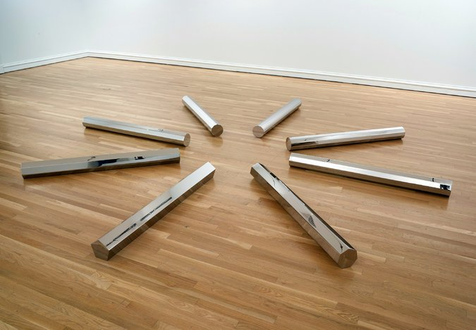

Donald Judd

Donald Judd (June 3, 1928 – February 12, 1994) was an American artist associated with minimalism (a term he nonetheless stridently disavowed).
In his work, Judd sought autonomy and clarity for the constructed object and the space created by it, ultimately achieving a rigorously democratic presentation without compositional hierarchy. It created an outpouring of seemingly effervescent works that defied the term "minimalism".
Nevertheless, he is generally considered the leading international exponent of "minimalism," and its most important theoretician through such seminal writings as "Specific Objects" (1964).